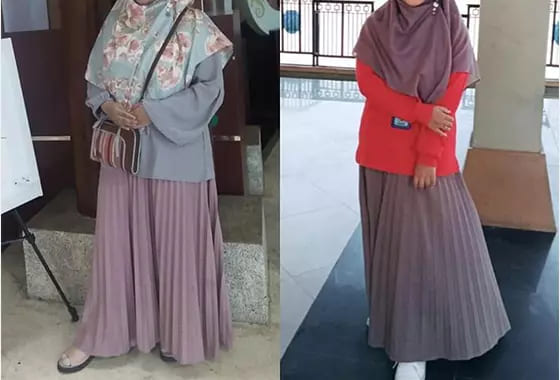

كيف تتخلصين من السيلوليت بدون دايت أو تمارين أو إضرار بالصحة؟
أفضل 3 طرق من الخبراء
ترافق هذه الأشياء الثلاثة أي امرأة حديثة: هاتف ذكي على الموضة، قليل من السيلوليت ورغبة دائمة في التخلص منه.
ماذا يجب أن تفعل إذا كنت تريد القضاء على السيلوليت؟ لا أكل شيئا. العيش في صالة الألعاب الرياضية. عد السعرات الحرارية. ابراهيم الحسيني، خبير السيلوليت، يدمر الصور النمطية ويقدم 3 طرق جديدة ستفاجئك بالتأكيد.
وغني عن القول أن الناس يجب أن يعيشوا نمط حياة صحي. ومع ذلك، فإن الحياة في المدن الكبيرة ليست بهذه البساطة. ليس لدى الجميع الوقت لممارسة التمارين الرياضية أو إمكانية تناول طعام صحي أو تناول الفيتامينات واجتياز جميع الفحوصات الطبية المطلوبة.

التدليك المضاد للسيلوليت
يعد التدليك أحد أكثر الطرق شعبية لمحاربة السيلوليت. ومع ذلك، ليس من السهل الاسترخاء أثناء العملية. يبدو أن الألم وعدم الراحة صاحبين دائمين لهذه الطريقة.
المعسر والضغط يجعل الأنسجة تحت الجلد تقوم بوظيفة أفضل، وتنقل كمية كبيرة من الدم وسائل اللمف. للحصول على نتائج مرئية، ستحتاج إلى أن لا يقل عن 8 مرات. للأسف سوف تظهر بعض الكدمات على جلدك بعد الجلسة الأولى.
لف الجسم، الساونا
هذه الطريقة تناسب أولئك الذين يمكنهم تحمل درجة حرارة عالية بسهولة. من أجل "ذوبان" السيلوليت، يجب عليك حضور الساونا على الأقل 3-4 مرات في الأسبوع خلال شهر واحد. يجب أن تكون درجة الحرارة القصوى، فمن المستحسن أيضًا الجمع بين الساونا ولف الجسم.
لا يمكن لكل شخص تحمل مثل هذه الظروف. تضع الحرارة ضغطًا كبيرًا على القلب، والمشكلة الأخرى هي ظهور الطفح الجلدي في بعض الأحيان تحت اللف.
كبسولات ورشها
الهبة الحقيقية لأولئك الذين يريدون الحصول على بشرة ناعمة من دون السيلوليت هي كبسولات ورشها
- تخترق المكونات النشطة كبسولات ورشها الحارق للدهون الجلد وتكسر الترسبات الدهنية وعلامات التمدد.
- يفتح كبسولات ورشها الامعاء وتشعر بالشبع ويحطم الدهون المتراكمة.
- إذا استخدمت بانتظام،
تناول كبسولات ورش ثلاث مرات يومياً على معدة فارغة ، قبل الأكل بساعة ، قبل الإفطار والغداء والعشاء.. سيسمح هذا بالتخلص من السنتيمترات والوزن الزائد في المناطق المستهدفة.
جميلة
بنات، أنا تعبت جدا. لقد زدت الكثير من الوزن خلال الأشهر الستة الماضية، ظهر السيلوليت على الوركين، ثم على الذراعين. لا أستطيع ارتداء ملابسي المعتادة، البلوزات ذات الأكمام الطويلة فقط. أشعر بالخجل الشديد لإظهار عيبوبي. لقد طلبت ، اتمني ان يكون مفيدا.
منى
بنات، لماذا تحتاجون إلى كل هذا الإذلال؟ مجرد ممارسة الجنس مع حبيبك، هي أفضل رياضة. ستكوني نحيفة وسيصبح جسمك ممشوقا، الآلات ليست ضرورية لفقدان الوزن :)
حنان
الرجال لا يحبون النساء النحيلات. المرأة التي تملك وسط أكبر، تعد أفضل.
هبة
وأنا أتفق معك 100 %. الشيء نفسه حدث معي. قبل عام كنت عارضة أزياء مشهورة. ولكن بسبب فضيحة في إحدى الحفلات، فقدت كل شيء. ألغيت العقود، أصبحت بلا وظيفة، وبلا مال. بدأت أفقد الكثير من الوزن. لم أستطع أن أنظر إلى نفسي في المرآة، كنت أبدو وكأنني هيكل عظمي. حتى صديقي تركني. فقط تخيلوا ذلك ... كان طولي 179 سم ووزني 48 كجم. أتذكر ذلك الوقت المرعب. الله لا يعيده. لذا فإنني أوصيكم أن تحبوا أنفسكم وأن تعتنيوا بأنفسكم.
إيمان
أنا أيضا استخدم ، نقصت 7 سم بعد الولادة! أحافظ على ثبات النتيجة، المنتج يقوم بعمل رائع في العناية بالبشرة، أصبحت بشرتي أكثر مرونة وسلاسة الآن، حتى أفضل من قبل الحمل! قليلا من التأني وستصبح بشرتي مثالية.
مريم
بمساعدة تمكنت من التخلص من السيلوليت على الساقين. بطني لم يكن مشكلة كبيرة مثل ساقي. الآن ساقي ضئيلة ومثيرة. لم أصدق أنه من الممكن في سن ال37.
فيريال
أنا أيضا أعاني من الوزن الزائد، ليست مشكلة بالنسبة لي لأن زوجي يحبني جدا. كل شيء يعتمد على احترام الفتاة للذات. يجب أن تحب نفسك مهما كان الأمر.
أماني
لا استطيع ان اتفق معك، أنا أحب نفسي ولكن أحب أيضًا الاعتناء بنفسي. هذا يثبت أنني أهتم بنفسي. الرجال يحبون جمال نسائهم، وينبغي أن تبدو أي فتاة جيدة لزوجها ولنفسها. لدي أيضا السيلوليت، وأنا أفكر في تجربة . ليس لدي وقت للف الجسم وقضاء الساعات في الساونا، لذلك هذا الخيار مثالي بالنسبة لي.
كريمة
عندما انفصل صديقي عني، فقدت 7 كيلوغرامات. كان وقتا عصيبا بالنسبة لي، بدوت كما لو كنت مريضة. هالات سوداء تحت العينين، وفقدان الشعر، وشعور سئ بوجه عام - ليست طريقة جيدة للتغيير.
نيرمان
كلام فارغ. لف الجسم هي الطريقة الوحيدة التي تساعد في محاربة السيلوليت، لا شيء غير ذلك.
ناهد
جربت اللف في الصالون، يمكنني أن أؤكد أن الإجراء فعال حقًا لكنه مكلف. من الأفضل أن تفعل ذلك في المنزل.
سالمة
بنات، التأثير رائع! جربت ذلك بالفعل 7 مرات، نقصت 7 سم. انا انصحكم ان تجربوه 
بشرى
بنات، اللفاف والساونا والبخاخات كلها حماقات. تريدين التخلص من السيلوليت؟ الجنس! ولكن فقط في موضع معين)
ثريا
ليس عندي مشكلة في الشكل الذي أبدو عليه، لا أضع أي قيود على نفسي. يمكنني تناول برغر كامل في الليل أو تناول عشرات الحلوى مع قهوتي الصباحية. الشيء الأكثر أهمية هو أن يكون لديك شريك بجانبك. لقضاء وقت ممتع معه أثناء حرق الدهون.
سلمى
أفتقر إلى قوة الإرادة. لقد جربت الحميات الغذائية عدة مرات، لا يمكن أن افعل ذلك بعد الآن. يمكنني أن انتظم عليها لمدة 3 أيام على الأكثر. هذه الطريقة ليست لي.
نور
أذهب إلى صالة الألعاب الرياضية بانتظام ولكن ما زلت لا أستطيع التخلص من السيلوليت. أنا لا أؤمن حقًا بلفاف الجسم.